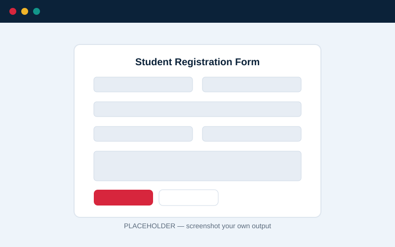

Student Registration Form
A registration form built for the creating-forms lab: name, password, e-mail,
phone, sex, date of birth, languages spoken and address. Every input is bound
to a <label> with a matching for/id
pair, and the date fields use three linked selects rather than a free-text box.
What I learned: the name attribute is what the
server actually receives, and a missing one means the field is silently dropped.